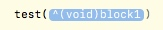

- Block是一个数据类型；
既然block是一个数据类型，那么我们自然可以声明一个block类型的变量，那么block变量中存储的是什么呢？
block类型的变量中存储的是代码段（可以有参数，可以有返回值）。
如何声明一个block变量
void (^myBlock1)();
int (^myBlock2)();
int (^myBlock3)(int num1, int num2);
block变量的初始化
void (^myBlock1)() = ^void(){
NSLog(@"test");
};
int (^myBlock2)() = ^int(){
int num1 = 10 + 20;
return num1;
};
int (^myblock3)(int num1, int num2) = ^int(int num1, int num2){
int num3 = num1 + num2;
return num3;
};
赋值给block变量的代码段必须要符合block变量的要求。
#import <Foundation/Foundation.h>
int main(int argc, const char * argv[]) {
void (^myBlock1)();
myBlock1 = ^void(){
NSLog(@"test");
};
myBlock1();
int (^myBlock2)() = ^int(){
int num1 = 10 + 20;
return num1;
};
int sum = myBlock2();
NSLog(@"sum = %d", sum);
int (^myblock3)(int num1, int num2) = ^int(int num1, int num2){
int num3 = num1 + num2;
return num3;
};
int res = myblock3(10, 100);
NSLog(@"res = %d", res);
return 0;
}
block的简写
- 如果代码段没有返回值，那么代码段的void可以省略：
//既没有参数也没有返回值的，void和（）都可以省略
void (^myBlock1)() = ^(){
NSLog(@"test");
};
- 如果代码段没有参数，代码段的（）也可以省略：
int (^myBlock2)() = ^int{
int num1 = 10 + 20;
return num1;
};
- 如果有指定参数，可以只写参数类型而不写参数名称：
int (^myblock3)(int, int) = ^int(int num1, int num2){
int num3 = num1 + num2;
return num3;
};
无论代码段是否有返回值，在写代码段的时候可以不写返回值的类型：
- 如果代码段省略了返回值，系统会自动确定返回值的类型
- 如果代码段有返回值，return的数据是什么类型，系统就会认为代码段是什么类型；
int (^myBlock4)(int, int) = ^(int num1, int num2){
int num3 = num1 + num2;
return num3;
};
int result = myBlock4(20, 30);
NSLog(@"result is %d", result);
简化block的定义
- typedef: 将block定义为一个短类型。
typedef void (^NewType)();
NewType block1 = ^void(){
NSLog(@"Hello");
};
block1();
- block内部可以取外部的局部变量和全局变量的值
- block内部可以修改全部变量的值，但是无法修改外部局部变量的值
- 如果需要修改，则局部变量定义方式为__block int num = 100;
block作为函数的参数
- 可以在函数中声明一个指定格式的block：
void test(void (^block1)()){
NSLog(@"~~~~~~~~");
block1();
NSLog(@"~~~~~~~~");
}
- 使用typedef简化定义：
typedef void (^NewBlock) ();
void test_2(NewBlock block2){
NSLog(@"~~~~~~~~");
block2();
NSLog(@"~~~~~~~~");
}
- 如何调用：
#import <Foundation/Foundation.h>
typedef void (^NewBlock) ();
void test(void (^block1)()){
NSLog(@"~~~~~~~~");
block1();
NSLog(@"~~~~~~~~");
}
void test_2(NewBlock block2){
NSLog(@"~~~~~~~~");
block2();
NSLog(@"~~~~~~~~");
}
int main(int argc, const char * argv[]) {
NewBlock type = ^{
NSLog(@"hahahah");
};
test_2(type);
test_2(^{
NSLog(@"hahahah");
});
return 0;
}
在这个状态下直接敲回车：

可以转换成：

然后直接补充代码即可：

将block作为函数的参数可以实现什么效果？
⁃ 可以将调用者所写的代码放到函数的内部去执行；